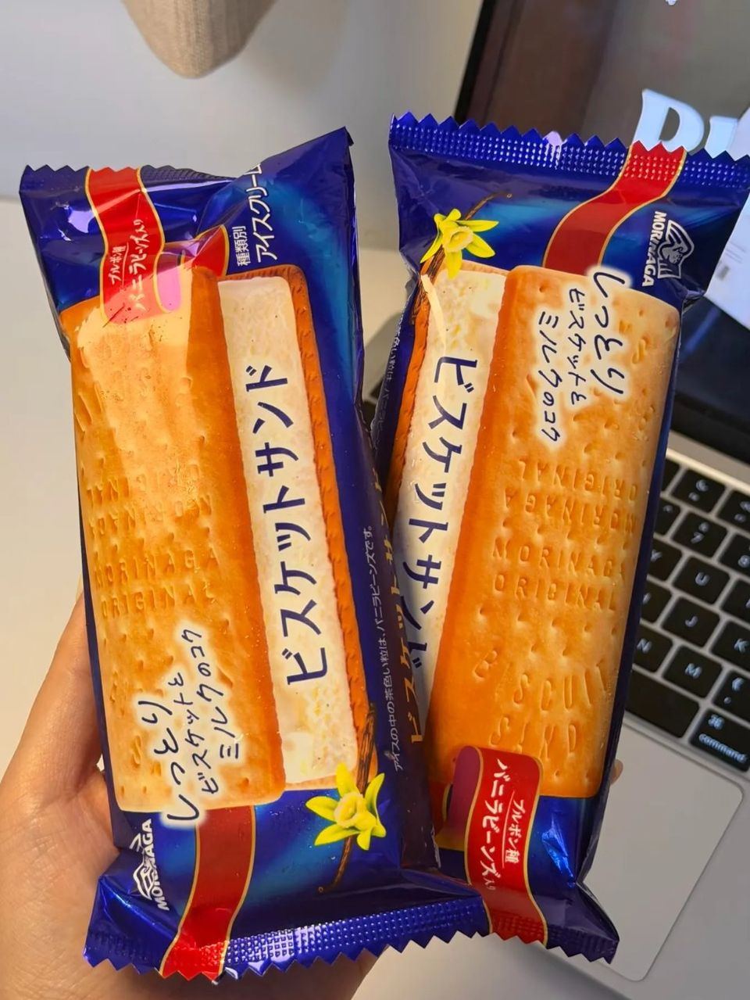
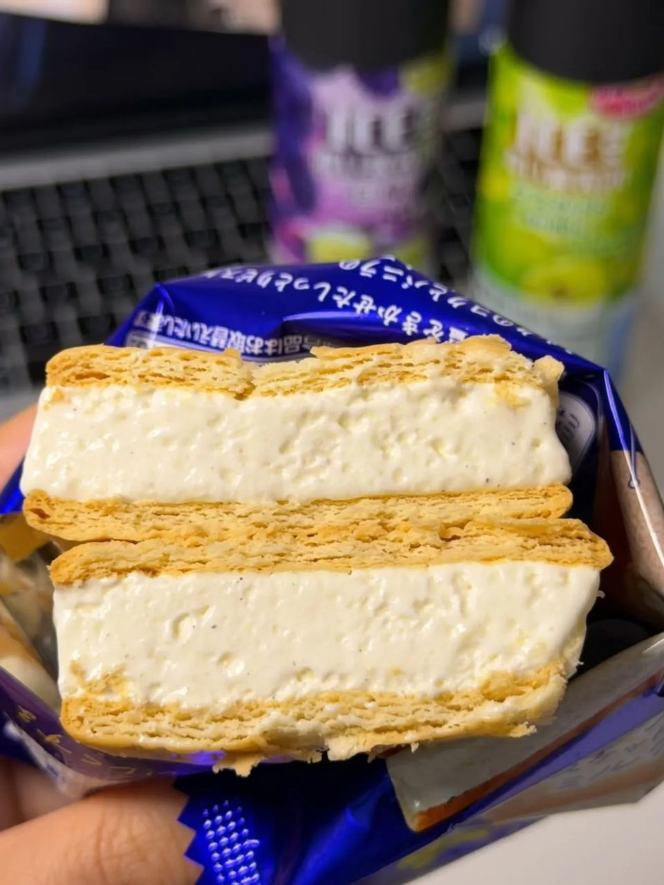
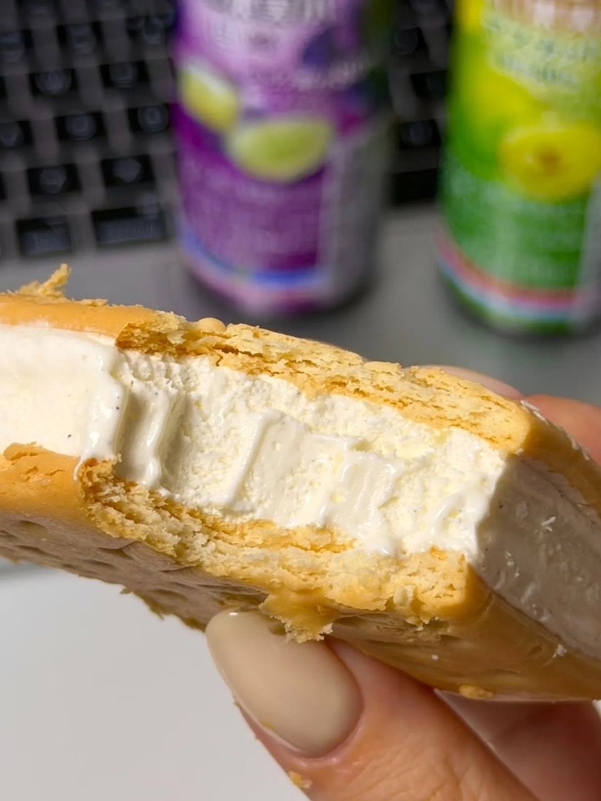

일본 편의점 아이스 추천 모리나가 비스켓샌드, 촉촉 비스킷 + 바닐라 아이스 후기
일본 갈 때마다 편의점에서 꼭 집는 아이스. 촉촉한 비스킷 + 바닐라빈 우유 아이스크림!
일본 오가며 편의점에 들를 때마다
꼭 하나씩 집게 되는 아이스가 있어요 🍦
화려하진 않은데 이상하게 자꾸 생각나는
모리나가 비스켓샌드, 지금부터 소개할게요!

1. 일본 편의점 아이스 코너 단골!
- 제조: 모리나가
- 파는 곳: 일본 편의점 아이스 코너

2. 촉촉한 비스킷 + 바닐라빈 우유 아이스크림!
비스킷은 촉촉하고,
사이에는 바닐라빈 우유 아이스크림이 들어 있어요.

3. 총평
이 조합은 못 참지!
- 추천: 화려한 맛보다 자꾸 생각나는 익숙한 맛 좋아하는 분
일본 가시면 편의점 아이스 코너에서 꼭 찾아보세요!